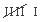
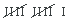
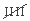
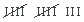

Ejercicios interactivos de tablas estadísticas
Completa las siguientes tablas atendiendo a los datos que se dan en cada uno de los enunciados:
1Las edades de los alumnos de la clase de Pablo son: 12, 13, 12, 12, 13, 12, 12, 11, 13, 13, 13, 12, 12, 13, 14, 12, 14, 12, 11, 11, 12, 11, 13, 11, 11, 12
| Edad (xi) |
Frecuencia absoluta (fi) |
Frecuencia relativa (ni) |
|---|---|---|
| 11 | ||
| 12 | ||
| 13 | ||
| 14 | ||
| Total |
| Edad (xi) |
Recuento | Frecuencia absoluta (fi) |
Frecuencia relativa (ni) |
|---|---|---|---|
| 11 |  | 6 | 0.23 |
| 12 |  | 11 | 0.42 |
| 13 | 7 | 0.27 | |
| 14 | 2 | 0.08 | |
| Total | 26 | 1 |
2Se les pregunta a los empleados de un restaurante de lujo que día de la semana prefieren tomarse libre, sabiendo que deben trabajar todos los domingos. Los resultados de las respuestas son los siguientes:
L, S, S, S, M, X, J, J, L, V, V, V, S, L, S, J, J, S, M, J, X, X, L, S, S, X, J, X, V, S, M, L, M, V, J, V, X, S, M, L, V, V, S, S, S.
| Día | Frecuencia absoluta (fi) |
Frecuencia absoluta (ni) |
Porcentaje |
|---|---|---|---|
| L | % | ||
| M | % | ||
| X | % | ||
| J | % | ||
| V | % | ||
| S | % | ||
| Total | % |
| Día | Recuento | Frecuencia absoluta (fi) |
Frecuencia absoluta (ni) |
Porcentaje |
|---|---|---|---|---|
| L | 6 | 0.13 | 13% | |
| M |  | 5 | 0.11 | 11% |
| X | 6 | 0.13 | 13% | |
| J | 7 | 0.16 | 16% | |
| V | 8 | 0.18 | 18% | |
| S |  | 13 | 0.29 | 29% |
| Total | 45 | 1 | 100% |
Contesta a las preguntas planteadas atendiendo a las tablas dadas en cada caso:
3La siguiente tabla muestra el estado civil de las personas que trabajan en una oficina, siendo:
 S = Soltero/a
S = Soltero/a
 C = Casado/a
C = Casado/a
 PH = Pareja de hecho
PH = Pareja de hecho
 SP = Separado/a
SP = Separado/a
 D = Divorciado/a
D = Divorciado/a
 V = Viudo/a
V = Viudo/a
| Estado Civil | Frecuencia absoluta (fi) |
|---|---|
| S | 8 |
| C | 9 |
| PH | 3 |
| SP | 4 |
| D | 5 |
| V | 1 |
| Total | 30 |
Halla las frecuencias relativas y frecuencias relativas en porcentajes.
| Estado Civil | Frecuencia absoluta (fi) |
Frecuencia relativa (ni) |
ni |
|---|---|---|---|
| S | 8 | % | |
| C | 9 | % | |
| PH | 3 | % | |
| SP | 4 | % | |
| D | 5 | % | |
| V | 1 | % | |
| Total | 30 | % |
¿Cuántas personas trabajan en la oficina?
personas.
¿Cuántas personas son solteras?
personas.
¿Cuántas personas no casadas hay?
personas.
¿Qué porcentaje de personas viudas hay en la oficina?
%
| Estado Civil | Frecuencia absoluta (fi) |
Frecuencia relativa (ni) |
Porcentajes |
|---|---|---|---|
| S | 8 | 0.27 | 27% |
| C | 9 | 0.3 | 30% |
| PH | 3 | 0.1 | 10% |
| SP | 4 | 0.13 | 13% |
| D | 5 | 0.17 | 17% |
| V | 1 | 0.03 | 3% |
| Total | 30 | 1 | 100% |
 En la oficina trabajan 30 personas.
En la oficina trabajan 30 personas.
 Son sonlteras 8 personas.
Son sonlteras 8 personas.
 Hay 21 personas no casadas.
Hay 21 personas no casadas.
 Hay un 3% de personas no casadas.
Hay un 3% de personas no casadas.
4Se ha realizado una encuesta a 700 usuarios de la web Vitutor.com elegidos al azar. En el apartado relativo a la compra de cursos el resultado, en porcentajes, es el que muestra la siguiente tabla:
| Curso | Porcentaje |
|---|---|
| 1º ESO | 18% |
| 2º ESO | 13% |
| 3º ESO | 14% |
| 4º ESO | 27% |
| 1º Bachillerato | 11% |
| 2º Bachillerato | 17% |
| Total | 100% |
Halla las frecuencias absolutas y relativas:
| Curso | Frecuencia absoluta (fi) |
Frecuencia relativa (ni) |
Porcentaje |
|---|---|---|---|
| 1º ESO | 18% | ||
| 2º ESO | 13% | ||
| 3º ESO | 14% | ||
| 4º ESO | 27% | ||
| 1º Bac | 11% | ||
| 2º Bac | 17% | ||
| Total | 100% |
¿Qué porcentaje de usuarios compró cursos de ESO?
%
¿Qué porcentaje de usuarios compró cursos de Bachillerato?
%
¿Cuántos usuarios compraron el curso de 3º de ESO?
¿Y el de 1º de ESO?
¿Cuántos usuarios compraron cursos de ESO?
¿Y de Bachillerato?
| Curso | Frecuencia absoluta (fi) |
Frecuencia relativa (ni) |
Porcentaje |
|---|---|---|---|
| 1º ESO | 126 | 0.18 | 18% |
| 2º ESO | 91 | 0.13 | 13% |
| 3º ESO | 98 | 0.14 | 14% |
| 4º ESO | 189 | 0.27 | 27% |
| 1º Bac | 77 | 0.11 | 11% |
| 2º Bac | 119 | 0.17 | 17% |
| Total | 700 | 1 | 100% |
 Un 72% de los usuarios compró cursos de ESO.
Un 72% de los usuarios compró cursos de ESO.
 Un 28% de los usuarios compró cursos de Bachillerato.
Un 28% de los usuarios compró cursos de Bachillerato.
 98 usuarios compraron el curso de 3º ESO.
98 usuarios compraron el curso de 3º ESO.
 126 usuarios compraron el curso de 1º ESO.
126 usuarios compraron el curso de 1º ESO.
 504 usuarios compraron cursos de ESO.
504 usuarios compraron cursos de ESO.
 196 usuarios compraron cursos de Bachillerato.
196 usuarios compraron cursos de Bachillerato.
Si tienes dudas puedes consultar la teoría